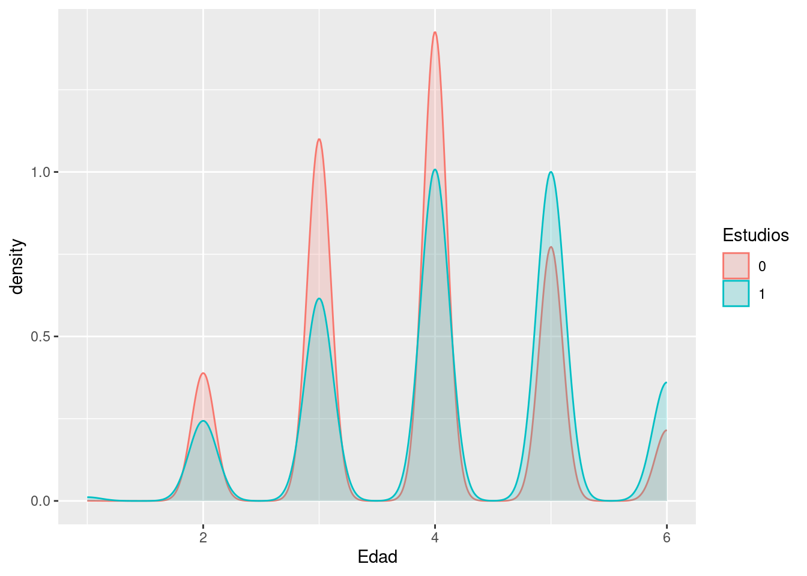
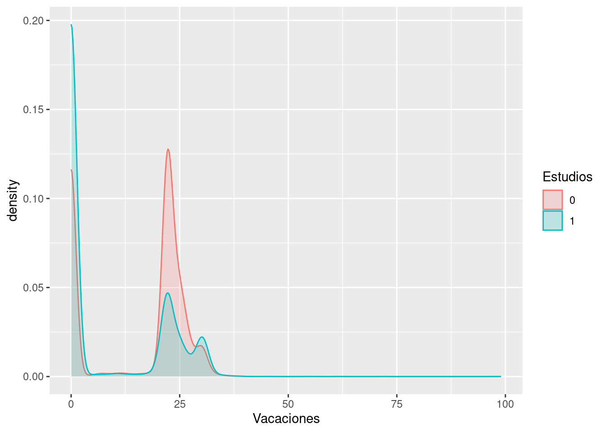
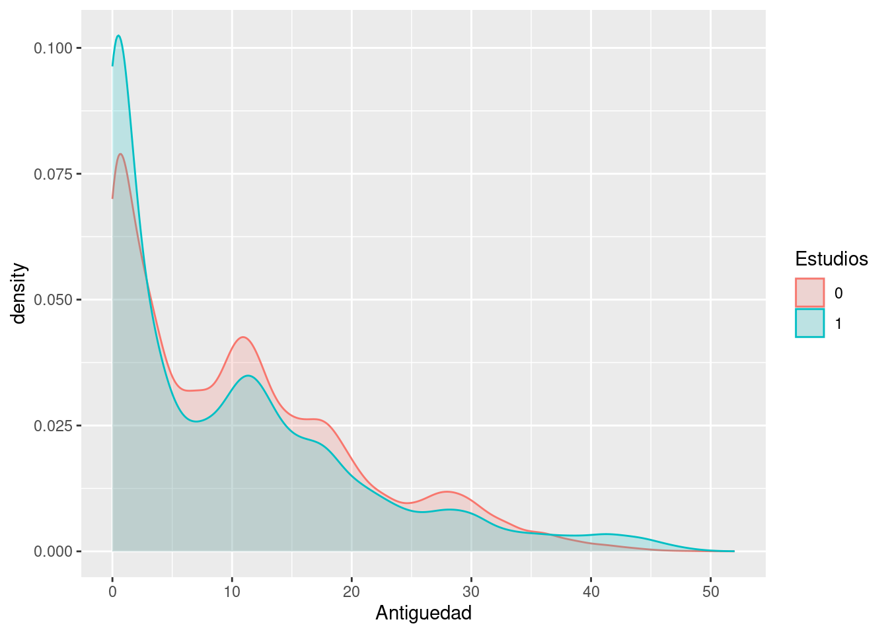
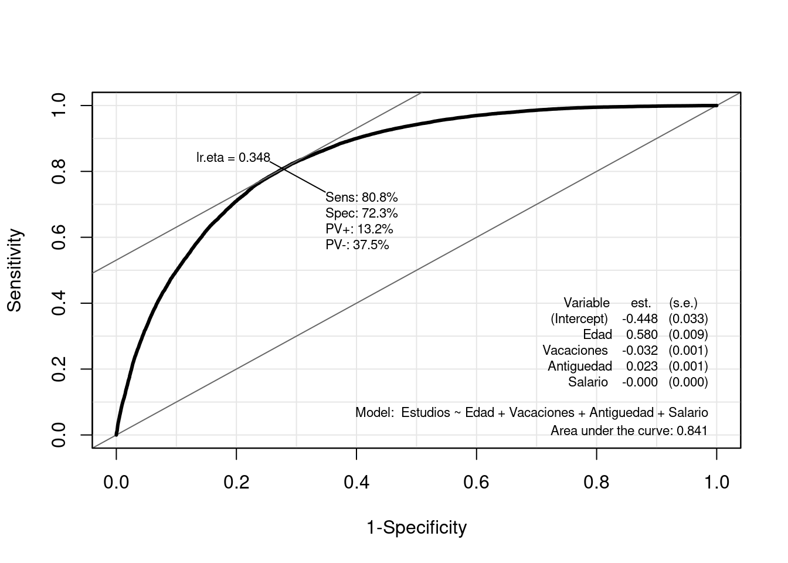

# Librerias
library(readxl) # Para leer los excels
library(dplyr) # Para tratamiento de dataframes
library(ggplot2) # Nice plots
library(Epi) # Para la ROC curveRegresión Logística: laboral
Introducción
dataset
En este cuaderno vamos a analizar el dataset llamado laboral.xlsx. Este contiene microdatos relativos a la Encuestas de estructura salarial. Resultados. Concretamente, datos correspondientes al año 2018. Las variables de interés son las siguientes:
Estudios: Nivel de estudios del encuestado. Valor 1 corresponde a individuos con muy bajo nivel académico (hasta primaria), y 0 a individuos con al menos nivel académico universitario.
Salario: Sueldo bruto anual.
Edad: Grupo de Edad del encuestado. Puesto que las clases tienen un orden intrínseco, la variable la vamos a tratar como cuantitativa.
- 01 MENOS 19 AÑOS
- 02 DE 20 A 29
- 03 DE 30 A 39
- 04 DE 40 A 49
- 05 DE 50 A 59
- 06 MÁS DE 59
Antiguedad: Años de antigüedad.
Vacaciones: Días de vacaciones al año.
El objetivo es mostrar en qué consiste una regresión logística y cómo llevarla a cabo en R.
Cargamos entonces el conjunto de datos:
datos <- read_excel("../../../files/laboral.xlsx", sheet = "Datos")Descripción del trabajo a realizar
(Esto irá en la web de explica) Se pretende hacer una regresión logística que clasifique la variable respuesta Estudios en función de varios predictores, todos ellos continuos: Edad, Vacaciones, Antiguedad y Salario.
- Hacer un análisis exploratorio.
- IMPORTANTE: Convertir a factor las variables que lo sean.
- Plantear diversos modelos según variables incluidas.
- Compararlos con ANOVA y ROC CURVE.
- Para el modelo seleccionado, explicar los coeficientes, odds ratio,…
Análisis Exploratorio (EDA1)
Lo primero de todo vamos a cargar las librearias necesarias para ejecutar el resto del código del trabajo:
Vemos que tenemos un porcentaje más grandae de gente con estudios universitarios en la muestra que gente con estudios hasta primaria. De datos con gente con estudios entre primaria y universitarios no disponemos en esta muestra.
Clasificación: Regresión Logística
Introducción
Un análisis de regresión logística es una técnica estadística multivariante que tiene como finalidad pronosticar o explicar los valores de una variable dependiente categórica a partir de una (regresión logística simple) o más (regresión logística múltiple) variables independientes categóricas o continuas. Dichas variables independientes reciben el nombre de covariables. Asimismo, a diferencia de lo que suele hacerse cuando tenemos una variable dependiente continua, cuando ésta es categórica, no interesa describir o pronosticar los valores concretos de dicha variable, sino la probabilidad de pertenecer a cada una de las categorías de la misma.
Aunque matemáticamente se pueda ajustar un modelo de regresión lineal clásico a la relación entre una variable dependiente categórica y una o varias covariables, cuando la variable dependiente es dicotómica (regresión logística binaria, caso más sencillo de regresión logística) no es apropiado utilizar un modelo de regresión lineal porque una variable dicotómica no se ajusta a una distribución normal, sino a una binomial. Ignorar esta cuestión podría llevar a obtener probabilidades imposibles: menores que cero o mayores que uno.
Para evitar este problema, es preferible utilizar funciones que realicen predicciones comprendidas entre un máximo y un mínimo. Una de estas funciones - posiblemente la más empleada - es la curva logística o función sigmoide:
[ =()= _0 + _1 X_1 + _2 X_2 + , p=P(Y=1) ]
Es decir, estamos estimando con una regresión lineal el valor de \(\eta\), que sí es una v.a. continua - a diferencia de Y que es binaria-.
Esto es, \(p=\frac{e^\eta}{1+e^\eta}=\frac{1}{1+e^{-\eta}}\). De esta forma, para valores positivos muy grandes de \(\eta\) llamado odds, \(e^{\eta}\) es aproximadamente cero, por lo que el valor de la función es 1; mientras que para valores negativos muy grandes de \(\eta\), \(e^{-\eta}\) tiende a infinito, haciendo que el valor de la función sea 0.
A continuación, para simplificar un poco las cosas, consideremos el modelo de regresión logística más sencillo: regresión logística binaria simple (una sola covariable):
[ P(Y=1)= ]
La interpretación de esta función es muy similar a la de una regresión lineal: el coeficiente \(\beta_0\) representa la posición de la curva sobre el eje horizontal o de abscisas (más hacia la izquierda o más hacia la derecha); mientras que \(\beta_1\) representa la pendiente de la curva, es decir, cuán inclinada está en su parte central (cuanto más inclinada, mayor capacidad de discriminar entre los dos valores de la variable dependiente).
Bondad de Ajuste e Interpretación Modelo
Interpretación Modelo
Recordar que el modelo tomaba la forma \[\eta=\log \left(\frac{p}{1-p}\right)= \beta_0 + \beta_1 X_1 + \beta_2 X_2 + \ldots , \quad \text{with } \quad p=P(Y=1)\], es decir, estamos estimando el log(odds). Esto nos lleva a las siguientes apreciaciones:
Aunque tanto \(P(Y=1)\), como \(Odds(Y=1)\), como \(\operatorname{logit}(Y=1)\) expresan la misma idea, están en distinta escala:
- La probabilidad toma valores comprendidos entre 0 y 1.
- La odds tiene un valor mínimo de cero y no tiene máximo.
- La logit o log(odds) no tiene ni mínimo ni máximo.
Por ejemplo, a una probabilidad de 0,5, le corresponde una odds de 1 y un logit de 0. Ahora bien, es cierto que razonar en términos de cambios en los logaritmos resulta poco intuitivo. Por ello, es preferible interpretar el cambio en las odds o en la razón de ventajas (también llamada odds ratio, razón de probabilidades o razón de momios).
La interpretación más frecuente es interpretar los signos de los coeficientes del modelo, es decir, los signos de \(\beta_1, \ldots , \beta_k\).
Si \(\beta_i >0\) , se traduce en que un aumento de una unidad en la variable \(x_i\) -si es continua- o un cambio de categoría -si \(x_i\) es categórica- se traduce en un aumento de \(\beta_i\) unidades el valor de logit. Es decir, la probabilidad \(p\) (que Y=1) aumenta, en función de \[p=\frac{e^\eta}{1+e^\eta}\].
- Si \(\beta_i <0\) , se traduce en que un aumento de una unidad en la variable \(x_i\) -si es continua- o un cambio de categoría -si \(x_i\) es categórica- se traduce en una disminución de \(\beta_i\) unidades el valor de logit. Es decir, la probabilidad \(p\) (que Y=1) disminuye, en función de \[p=\frac{e^\eta}{1+e^\eta}\].
Una pregunta importante en cualquier análisis de regresión es si el modelo propuesto se ajusta adecuadamente a los datos, lo que conduce naturalmente a la noción de una prueba formal para la falta de ajuste (o bondad de ajuste).
Medidas Especifidad y Sensibilidad
La especificidad y la sensibilidad son medidas utilizadas para evaluar el rendimiento de un modelo predictivo, especialmente en problemas de clasificación binaria (donde solo hay dos clases). Las definimos como:
- Sensibilidad (Sensitivity): Es la proporción de verdaderos positivos (casos positivos correctamente identificados) respecto al total de casos positivos reales. Es la capacidad del modelo para identificar correctamente los casos positivos.
- Especificidad (Specificity): Es la proporción de verdaderos negativos (casos negativos correctamente identificados) respecto al total de casos negativos reales. Representa la capacidad del modelo para identificar correctamente los casos negativos.
Un equilibrio entre ambas es deseable, pero depende del contexto específico del problema y de las consecuencias de los falsos positivos y falsos negativos. En el caso, por ejemplo, de detectar si un paciente tiene cáncer o no, parece más razonable centrarse en los Falsos Negativos, ya que un paciente que tiene cáncer no lo estamos detectando, lo que lleva un riesgo ímplicito muy alto.
| Clasificado como Positivo | Clasificado como Negativo | Total | |
|---|---|---|---|
| Realmente Positivo | Verdadero Positivo (VP) | Falso Negativo (FN) | VP + FN |
| Realmente Negativo | Falso Positivo (FP) | Verdadero Negativo (VN) | FP + VN |
| Total | VP + FP | FN + VN |
Sensibilidad ( )
Especificidad: ( )
Curva ROC
La curva ROC es una representación gráfica de la sensibilidad frente a la tasa de falsos positivos a varios umbrales de clasificación. Se utiliza comúnmente en análisis de clasificación para evaluar el rendimiento de un modelo.
Para calcular el área bajo la curva ROC (AUC-ROC), se utiliza el área debajo de la curva generada por la representación de la sensibilidad y la tasa de falsos positivos. Cuanto más cerca esté el AUC-ROC de 1, mejor será el rendimiento del modelo, ya que indica una mayor capacidad de distinguir entre clases.
Es una medida de bondad porque evalúa qué tan bien puede discriminar un modelo entre las clases positivas y negativas. Cuanto más se acerque el AUC a 1, mejor será la capacidad del modelo para distinguir entre las clases. Se utiliza para comparar y seleccionar modelos, donde un AUC mayor indica un mejor rendimiento predictivo.
Modelo
Formulación
IMPORTANTE: Convertir a factor las variables que tengan que ser tratadas como tal, de lo contrario R las tratará como numéricas. Además, la variable respuesta debe tener los niveles codificados como \(0\) y \(1\) para poder usar la funcion glm. El resto de variables convertirlas a numéricas en caso de que aplique.
datos$Edad <- as.numeric(datos$Edad)
datos$Vacaciones <- as.numeric(datos$Vacaciones )
datos$Antiguedad <- as.numeric(datos$Antiguedad)
datos$Salario <- as.numeric(datos$Salario)
# Pasar factores a 0=Universitarios y 1=Hasta Primaria
datos$Estudios <- as.factor(datos$Estudios)
# Ver resumen de datos y ver si hay NA
summary(datos) Estudios Edad Vacaciones Antiguedad Salario
0:63527 Min. :1.000 Min. : 0.00 Min. : 0.0 Min. : 63
1:36255 1st Qu.:3.000 1st Qu.: 0.00 1st Qu.: 2.0 1st Qu.: 15200
Median :4.000 Median :22.00 Median : 9.0 Median : 24959
Mean :3.955 Mean :12.99 Mean :10.5 Mean : 30106
3rd Qu.:5.000 3rd Qu.:23.00 3rd Qu.:16.0 3rd Qu.: 39228
Max. :6.000 Max. :99.00 Max. :52.0 Max. :100000 sum(is.na(datos))[1] 0A continuación presentamos tres posibles modelos y posteriormente elegiremos uno de ellos.
- lmod1 : Queremos clasificar los Estudios en función de la edad de la persona (numérica).
- lmod2 : Queremos clasificar los Estudios en función de la edad de la persona (numérica) y las vacaciones (numérica).
- lmod3 : Queremos clasificar los Estudios en función de la edad de la persona (numérica), las vacaciones (numérica) y la Antigüedad (numérica).
- lmod4 : Queremos clasificar los Estudios en función de la edad de la persona (numérica), las vacaciones (numérica), la Antigüedad (numérica) y el Salario (numérica).
# lmod1
lmod1 <- glm(formula = Estudios ~ Edad, family = binomial(link = logit), data = datos)
summary(lmod1)
Call:
glm(formula = Estudios ~ Edad, family = binomial(link = logit),
data = datos)
Coefficients:
Estimate Std. Error z value Pr(>|z|)
(Intercept) -1.806239 0.026400 -68.42 <2e-16 ***
Edad 0.311042 0.006306 49.33 <2e-16 ***
---
Signif. codes: 0 '***' 0.001 '**' 0.01 '*' 0.05 '.' 0.1 ' ' 1
(Dispersion parameter for binomial family taken to be 1)
Null deviance: 130778 on 99781 degrees of freedom
Residual deviance: 128266 on 99780 degrees of freedom
AIC: 128270
Number of Fisher Scoring iterations: 4# lmod2
lmod2 <- glm(formula = Estudios ~ Edad+ Vacaciones, family = binomial(link = logit), data = datos)
summary(lmod2)
Call:
glm(formula = Estudios ~ Edad + Vacaciones, family = binomial(link = logit),
data = datos)
Coefficients:
Estimate Std. Error z value Pr(>|z|)
(Intercept) -1.3429591 0.0275630 -48.72 <2e-16 ***
Edad 0.3542012 0.0066062 53.62 <2e-16 ***
Vacaciones -0.0530736 0.0005864 -90.50 <2e-16 ***
---
Signif. codes: 0 '***' 0.001 '**' 0.01 '*' 0.05 '.' 0.1 ' ' 1
(Dispersion parameter for binomial family taken to be 1)
Null deviance: 130778 on 99781 degrees of freedom
Residual deviance: 119481 on 99779 degrees of freedom
AIC: 119487
Number of Fisher Scoring iterations: 4# lmod3
lmod3 <- glm(formula = Estudios ~ Edad+Vacaciones+Antiguedad, family = binomial(link = logit), data = datos)
summary(lmod3)
Call:
glm(formula = Estudios ~ Edad + Vacaciones + Antiguedad, family = binomial(link = logit),
data = datos)
Coefficients:
Estimate Std. Error z value Pr(>|z|)
(Intercept) -1.7050721 0.0294638 -57.87 <2e-16 ***
Edad 0.5204287 0.0080291 64.82 <2e-16 ***
Vacaciones -0.0501357 0.0005933 -84.51 <2e-16 ***
Antiguedad -0.0321310 0.0008546 -37.60 <2e-16 ***
---
Signif. codes: 0 '***' 0.001 '**' 0.01 '*' 0.05 '.' 0.1 ' ' 1
(Dispersion parameter for binomial family taken to be 1)
Null deviance: 130778 on 99781 degrees of freedom
Residual deviance: 118034 on 99778 degrees of freedom
AIC: 118042
Number of Fisher Scoring iterations: 4# lmod4
lmod4 <- glm(formula = Estudios ~ Edad+Vacaciones+Antiguedad+Salario, family = binomial(link = logit), data = datos)
summary(lmod3)
Call:
glm(formula = Estudios ~ Edad + Vacaciones + Antiguedad, family = binomial(link = logit),
data = datos)
Coefficients:
Estimate Std. Error z value Pr(>|z|)
(Intercept) -1.7050721 0.0294638 -57.87 <2e-16 ***
Edad 0.5204287 0.0080291 64.82 <2e-16 ***
Vacaciones -0.0501357 0.0005933 -84.51 <2e-16 ***
Antiguedad -0.0321310 0.0008546 -37.60 <2e-16 ***
---
Signif. codes: 0 '***' 0.001 '**' 0.01 '*' 0.05 '.' 0.1 ' ' 1
(Dispersion parameter for binomial family taken to be 1)
Null deviance: 130778 on 99781 degrees of freedom
Residual deviance: 118034 on 99778 degrees of freedom
AIC: 118042
Number of Fisher Scoring iterations: 4En este caso, el Modelo 4 tiene el AIC más bajo, lo que sugiere que podría ser el mejor ajuste entre los tres modelos. Además es el que mayor bajada de AIC ha experimentado conforme al modelo anterior, incluyendo este la variable Salario. Es por ello que esta variable parece de vital importancia a la hora de clasificar el nivel de estudios. Sin embargo, es importante considerar otros aspectos y realizar pruebas adicionales si es necesario para validar el modelo seleccionado. Por otro lado, en términos de la Deviance podemos ver cosas parecidas.
Para este modelo vamos a calcular la matriz de confusión y el área ROC. Hemos calculado la matriz de confusión utilizando un threshold de 0.51. Es decir, si hay mas de un 0.51 de probabilidad de que una observación pertenezca a la clase 1 (estudios hasta primaria), entonces lo clasficamos como tal.
Luego veremos el valor óptimo para este threshold.
# confusion matrices
predicted2 <- predict(lmod4, data.frame(Edad = datos$Edad, Vacaciones = datos$Vacaciones, Antiguedad=datos$Antiguedad, Salario=datos$Salario), type = "response")
library(caret)
confusionMatrix(data = as.factor(ifelse(predicted2 > 0.5, 1, 0)), reference = datos$Estudios,positive = "1")Realicemos ahora la curva ROC con la función ROC del paquete Epi. Esa función nos va a devolver la ROC curve con la información pertinente para la regresión logística, encontrando el threshold óptimo para el que se obtienen mejores resultados en las métricas.
ROC(form = Estudios ~ Edad+Vacaciones+Antiguedad+Salario, data = datos, plot = "ROC", lwd = 3, cex = 1.5)Observamos una Especifidad del 72% y una Sensibilidad del 80%. Esto quiere decir que nuestro modelo es mejor evitando falsos negativos, que falsos positivos Es decir, que es mejor evitando clasficar a alguien como que tiene estudios cuando verdaderamente no los tiene, que al revés.
Destacar que el elemtno Ir.eta que aparece arriba, es el punto de corte óptimo (threshold óptimo) de la probabilidad. Es decir, si nuestra regresión logística predice que hay una probabilidad mayor de \(0.348\) de que una observación sea mujer, entonces la clasificaremos como tal.
Otras consideraciones
Podemos usar el presente modelo para predecir la probabilidad de no tener estudios (máximo nivel primaria) en función de las variables predictoras de nuevas observaciones.
Interpretación coeficientes
Vamos a volver a sacar el summary del modelo para proceder a explicar todo bien de nuevo.
summary(lmod4)
Call:
glm(formula = Estudios ~ Edad + Vacaciones + Antiguedad + Salario,
family = binomial(link = logit), data = datos)
Coefficients:
Estimate Std. Error z value Pr(>|z|)
(Intercept) -4.485e-01 3.340e-02 -13.43 <2e-16 ***
Edad 5.803e-01 9.029e-03 64.27 <2e-16 ***
Vacaciones -3.232e-02 6.752e-04 -47.86 <2e-16 ***
Antiguedad 2.324e-02 1.088e-03 21.36 <2e-16 ***
Salario -8.936e-05 7.716e-07 -115.81 <2e-16 ***
---
Signif. codes: 0 '***' 0.001 '**' 0.01 '*' 0.05 '.' 0.1 ' ' 1
(Dispersion parameter for binomial family taken to be 1)
Null deviance: 130778 on 99781 degrees of freedom
Residual deviance: 94200 on 99777 degrees of freedom
AIC: 94210
Number of Fisher Scoring iterations: 5Edad: Por cada incremento unitario en la edad, el logaritmo de odds de éxito en Nivel de Estudios= Hasta primaria, aumenta aproximadamente en 0.58, manteniendo constante el resto de variables. Esto implica que a mayor edad es menor la incidencia de gente con estudios, lo cual se puede corrobar ya que conforme nos alejamos en el tiempo menos gente estudiaba.
Vacaciones: Por cada incremento unitario en la altura, el logaritmo de odds de éxito en Estudios disminuye aproximadamente en 0.023, manteniendo constante el resto de variables.
Antiguedad: Por cada incremento unitario en el peso, el logaritmo de odds de éxito en Estudios aumenta aproximadamente en 0.023, manteniendo constante el resto de variables.
salario: Por cada incremento unitario en el peso, el logaritmo de odds de éxito en Estudios disminuye aproximadamente en 0.000089, manteniendo constante el resto de variables.
datos <- na.omit(datos)
datos %>% ggplot(aes(x = Edad)) +
geom_density(
aes(
group = Estudios,
colour = Estudios,
fill = Estudios
),
alpha = 0.2
)
datos <- na.omit(datos)
datos %>% ggplot(aes(x = Vacaciones)) +
geom_density(
aes(
group = Estudios,
colour = Estudios,
fill = Estudios
),
alpha = 0.2
)
datos <- na.omit(datos)
datos %>% ggplot(aes(x = Antiguedad)) +
geom_density(
aes(
group = Estudios,
colour = Estudios,
fill = Estudios
),
alpha = 0.2
)
datos <- na.omit(datos)
datos %>% ggplot(aes(x = Salario)) +
geom_density(
aes(
group = Estudios,
colour = Estudios,
fill = Estudios
),
alpha = 0.2
)
Conclusiones
Este modelo de regresión logística parece haber pasado todos los supuestos de dicha regresión, no obstante, con muy buenos valores en las métricas. Sería posible usarlo para clasificar en la vida real.
Footnotes
EDA viene del Inglés Exploratory Data Analysis y son los pasos relativos en los que se exploran las variables para tener una idea de que forma toma el dataset.↩︎